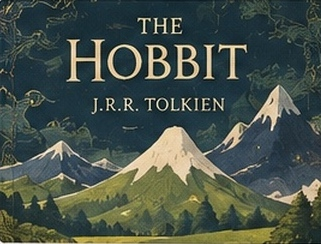
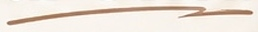
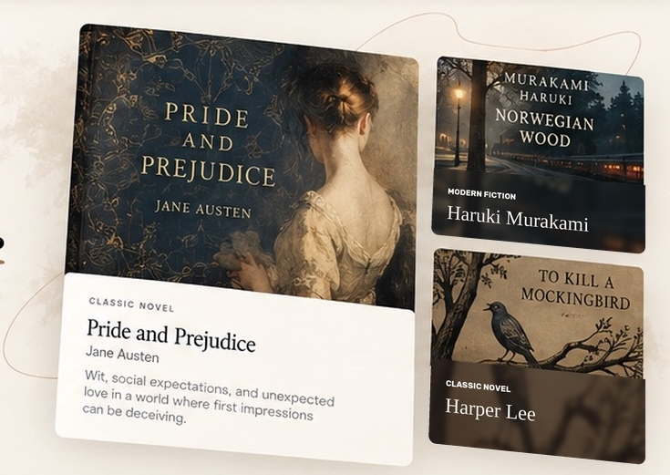
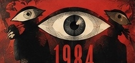
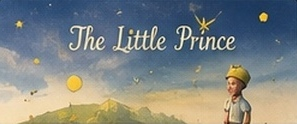

Fantasy · Chapter 1
The Hobbit
J.R.R. TolkienA reluctant hero, an unexpected journey, and a world far bigger than home.
24.8k 612Read
 WordWeft
WordWeft
Discover stories from real people.
Find your next chapter, or write your own.


A reluctant hero, an unexpected journey, and a world far bigger than home.


 Classics
Classics Fantasy
Fantasy Romance
Romance Sci-Fi
Sci-Fi Mystery
Mystery Poetry
Poetry Slice of Life
Slice of Life Essays
Essays